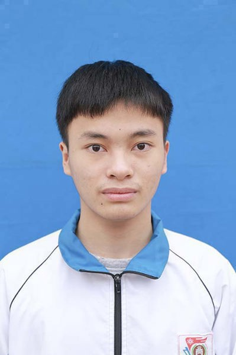

Một sinh viên năm nhất với niềm tin rằng vật liệu của tương lai sẽ được thiết kế bởi những kỹ sư biết tư duy số, biết cộng tác thông minh và sử dụng AI có trách nhiệm. Portfolio này là minh chứng cho hành trình đó.

Trang giới thiệu cá nhân — nơi em chia sẻ câu chuyện, mục tiêu và định hướng phát triển của mình trong môi trường đại học và xa hơn.
Em chào thầy cô! Em là Nguyễn Thành Tâm, sinh viên năm nhất ngành Công nghệ Vật liệu tại Trường Đại học Công nghệ — Đại học Quốc gia Hà Nội. Trước khi đặt chân vào giảng đường đại học, em đã mang theo một câu hỏi lớn: vật liệu nào sẽ định hình thế giới của 20 năm tới? Chính câu hỏi đó dẫn em đến ngành học này.
Em nhận ra rằng một kỹ sư vật liệu thế hệ mới không thể chỉ giỏi hóa học và vật lý. Họ cần biết tìm kiếm và đánh giá thông tin học thuật một cách có phê phán, biết cộng tác trong môi trường số, biết tận dụng AI như một người đồng hành thông minh — và quan trọng hơn, biết làm tất cả điều đó một cách có trách nhiệm và liêm chính.
Mục tiêu ngắn hạn của em trong năm học đầu tiên: xây dựng nền tảng tư duy số vững chắc, thành thạo các công cụ nghiên cứu học thuật và hình thành thói quen tự học bền vững. Mục tiêu dài hạn: trở thành một nhà nghiên cứu vật liệu có khả năng ứng dụng AI và dữ liệu lớn trong thiết kế vật liệu mới, góp phần vào các giải pháp năng lượng sạch và bền vững cho Việt Nam.
Portfolio này không chỉ là bài nộp học phần — đây là bản ghi chép hành trình học tập của em, một tài liệu sống mà em sẽ tiếp tục bổ sung và hoàn thiện theo năm tháng.
Mỗi bài tập là một cột mốc trong hành trình xây dựng năng lực số. Nhấn "Xem bài tập" để truy cập sản phẩm hoàn chỉnh.
Trong quá trình thực hành bài tập này, em đã thực hiện đúng 100% các yêu cầu về tên gọi, vị trí lưu trữ và các thao tác kỹ thuật dòng lệnh cơ bản của Windows Explorer.
Các ảnh chụp màn hình minh chứng được sắp xếp theo đúng trình tự thao tác thực tế. Qua đó, em đã làm quen và thực hiện thành thạo các kỹ năng quản lý dữ liệu cốt lõi trên Windows Explorer bao gồm: tạo mới, đổi tên, sao chép, di chuyển, nén/giải nén tệp tin, cấu hình thuộc tính ẩn/chỉ đọc và khôi phục dữ liệu từ Recycle Bin.
Trong kỷ nguyên số, một hệ thống đặt tên dữ liệu không nhất quán sẽ dẫn đến xung đột phiên bản và mất mát tài liệu nghiêm trọng. Đối với một kỹ sư tương lai, việc rèn luyện thói quen tổ chức cây thư mục logic và đặt tên tệp chuẩn hóa từ năm nhất không chỉ giúp tối ưu hóa không gian lưu trữ mà còn là bước đầu xây dựng tính kỷ luật, sự cẩn trọng và tác phong làm việc khoa học chuyên nghiệp.
Sản phẩm thực hành tập trung vào việc tổng quan tài liệu khoa học về chủ đề: "Sự tiến hóa của linh kiện vi điện tử và Chip bán dẫn chuyên dụng trong tối ưu hóa hiệu năng Trí tuệ nhân tạo (AI)".
Bước 1: Xác định từ khóa cốt lõi về linh kiện vi điện tử, chip bán dẫn và hiệu năng AI.
Bước 2: Sử dụng cú pháp nâng cao để lọc bài báo từ các nhà xuất bản uy tín.
Bước 3:Đánh giá tính thời sự, thẩm quyền tác giả và độ chính xác của tài liệu.
Bước 4: Thực hành trích dẫn tự động chuẩn xác theo định dạng tiêu chuẩn IEEE để đảm bảo tính liêm chính học thuật.
Em thực hành nghiên cứu chủ đề "Phát triển kĩ năng viết prompt hiệu quả để tận dụng tối đa khả năng của các mô hình ngôn ngữ lớn (LLM) trong học tập". Sự khác biệt về kết quả khi tối ưu câu lệnh là rất đáng kinh ngạc:
Prompt cải tiến đã áp dụng xuất sắc bộ cấu trúc **CREATE** và **năm thành phần cốt lõi** (Vai trò, Ngữ cảnh, Nhiệm vụ, Giới hạn, Định dạng). Việc định danh rõ vai trò chuyên gia, xác định đối tượng đích là sinh viên năm nhất, giới hạn dung lượng và yêu cầu chia nhỏ các bước giúp mô hình ngôn ngữ lớn (LLM) trả về kết quả cá nhân hóa chính xác, có tính ứng dụng học thuật cao và giảm thiểu hiện tượng ảo giác thông tin.
Báo cáo cá nhân ghi lại chi tiết vai trò quản lý, điều phối công việc và phân chia trách nhiệm của em trong dự án nhóm: "Xây dựng Prototype Game" của sinh viên Nguyễn Thành Tâm (MSV: 25024029).
Báo cáo thực hành tập trung vào chủ đề: "Ứng dụng AI trong sáng tạo nội dung số - Chủ đề 'Tầm nhìn về Năng lượng Xanh và Thành phố Thông minh năm 2050'".
Em đã kết hợp sức mạnh của AI để tối ưu hóa quy trình sản xuất nội dung đa phương tiện. Trong đó, AI đóng vai trò hỗ trợ kích hoạt ý tưởng (ideation), phác thảo khung lập luận logic và trợ giúp xây dựng kịch bản. Từ nền tảng đó, em tự tay hoàn thiện và biên tập lại nội dung bằng ngôn ngữ cá nhân, đồng thời ứng dụng AI để tạo sinh các tài nguyên đồ họa trực quan minh họa cho giải pháp công nghệ năng lượng tương lai.
Báo cáo học thuật đi sâu phân tích việc tích hợp AI có trách nhiệm dựa trên các khía cạnh đạo đức cốt lõi (Tính liêm chính, Sự minh bạch, Bảo mật dữ liệu, Tránh phụ thuộc nhận thức). Từ đó, em tự thiết lập bộ nguyên tắc hành vi số cá nhân:
Cảm nhận cá nhân sau một học kỳ xây dựng Portfolio — những bài học không có trong giáo trình.
Khi bắt đầu môn học này, em nghĩ đây chỉ là một học phần kỹ năng mềm bình thường. em đã nhầm. Nhìn lại, đây là môn học đầu tiên ở đại học buộc em phải đặt câu hỏi về cách mình học, không chỉ về nội dung em học.
Đó là lúc em ngồi viết Bài 6 về đạo đức AI. Lần đầu tiên em phải thành thật với bản thân: em đã bao nhiêu lần nộp bài mà không thực sự hiểu những gì mình viết, chỉ vì AI viết nhanh và nghe có vẻ đúng? Câu hỏi đó không dễ chịu chút nào — nhưng chính vì không dễ chịu mà nó có giá trị.
Bài 3 về Prompt Engineering cũng cho em một cú shock nhỏ. em nhận ra rằng chất lượng câu hỏi quyết định chất lượng câu trả lời — nguyên tắc này áp dụng không chỉ với AI, mà với giáo sư, với đồng nghiệp, với cuộc sống. Người biết đặt câu hỏi đúng sẽ luôn có lợi thế.
Là đã không để Portfolio này trở thành một bài tập "check-box". Mỗi bài tập em cố ý tìm kết nối với ngành Công nghệ Vật liệu — cách đặt tên tệp trong nghiên cứu, cách đánh giá bài báo khoa học, cách dùng AI để khám phá vật liệu mới. Điều đó khiến mỗi giờ làm việc có ý nghĩa hơn.
Thách thức lớn nhất không phải kỹ thuật — mà là tính nhất quán. Duy trì hệ thống thư mục, cập nhật Notion đều đặn, kiểm chứng nguồn thông tin mỗi lần... đó là những hành động nhỏ nhưng đòi hỏi kỷ luật thực sự. em thất bại nhiều lần, nhưng mỗi lần thất bại là một lần em hiểu rõ hơn giá trị của sự nhất quán.